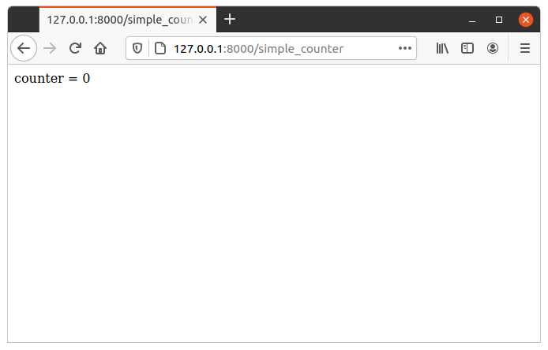

Fixures¶
Um fixture é definido como “uma peça de equipamento ou de mobiliário, que é fixa em posição num edifício ou veículo”. No nosso caso, um dispositivo elétrico é algo ligado à ação que processa um pedido HTTP, a fim de produzir uma resposta.
When processing any HTTP requests there are some optional operations we may want to perform. For example parse the cookie to look for session information, commit a database transaction, determine the preferred language from the HTTP header and lookup proper internationalization, etc. These operations are optional. Some actions need them and some actions do not. They may also depend on each other. For example, if sessions are stored in the database and our action needs it, we may need to parse the session cookie from the HTTP header, pick up a connection from the database connection pool, and - after the action has been executed - save the session back in the database if data has changed.
Fixtures PY4WEB fornecem um mecanismo para especificar o que uma ação necessidades para que py4web pode realizar as tarefas necessárias (e ignorar os não necessários) da maneira mais eficiente. Fixures tornar o código eficiente e reduzir a necessidade de código clichê.
Fixtures PY4WEB são semelhantes aos middleware WSGI e BottlePy plug-in, exceto que eles se aplicam a ações individuais, não para todos eles, e pode dependem uns dos outros.
PY4WEB comes with some pre-defined fixtures: sessions, url signing and flash messages will be fully explained in this chapter. Database connections, internationalization, authentication, and templates will instead be just outlined here since they have dedicated chapters. The developer is also free to add fixtures, for example, to handle a third party template language or third party session logic; this is explained later in the Fixtures personalizados paragraph.
Using Fixtures¶
As we’ve seen in the previous chapter, fixtures are the arguments of the decorator
@action.uses(...). You can specify
multiple fixtures in one decorator or you can have multiple decorators.
Also, fixtures can be applied in groups. For example:
preferred = action.uses(session, auth, T, flash)
Then you can apply all of them at once with:
@action('index.html')
@preferred
def index():
return dict()
Usually, it’s not important the order you use to specify the fixtures, because py4web knows well how to manage them. But there is an important exception: the Template fixture must always be the last one.
The Template fixture¶
PY4WEB by default uses the YATL template language and provides a fixture for it.
from py4web import action
from py4web.core import Template
@action('index')
@action.uses(Template('index.html', delimiters='[[ ]]'))
def index():
return dict(message="Hello world")
Note: this example assumes that you created the application from the scaffolding app, so that the template index.html is already created for you.
O objeto template é um dispositivo elétrico. Ele transforma o `` dict () “ retornado pela ação em uma string usando o arquivo template index.html`. Em um capítulo posterior iremos fornecer um exemplo de como definir um fixture personalizado para usar uma linguagem de template diferente, por exemplo Jinja2.
Tenha em conta que uma vez que o uso de templates é muito comum e uma vez que, muito provavelmente, cada ação usa um template diferente, nós fornecemos um pouco de açúcar sintático, e as duas linhas a seguir são equivalentes:
@action.uses('index.html')
@action.uses(Template('index.html', delimiters='[[ ]]')
Notice that py4web template files are cached in RAM. The py4web caching object is described later on Caching e Memoize.
Aviso
If you use multiple fixtures, always place the template as the last one. Otherwise, it will not have access to various things it needs from the other fixtures.
For example:
@action.uses(session, db, 'index.html') # right @action.uses('index.html', session, db) # wrong
The Translator fixture¶
Aqui está um exemplo de uso:
from py4web import action, Translator
import os
T_FOLDER = os.path.join(os.path.dirname(__file__), 'translations')
T = Translator(T_FOLDER)
@action('index')
@action.uses(T)
def index(): return str(T('Hello world'))
The string hello world will be translated based on the
internationalization file in the specified “translations” folder that
best matches the HTTP accept-language header.
Aqui `` Translator`` é uma classe py4web que se estende `` pluralize.Translator`` e também implementa a interface de `` Fixture``.
Podemos facilmente combinar vários Fixtures. Aqui, como exemplo, podemos tornar a acção com um contador que conta “visitas”.
from py4web import action, Session, Translator, DAL
from py4web.utils.dbstore import DBStore
import os
db = DAL('sqlite:memory')
session = Session(storage=DBStore(db))
T_FOLDER = os.path.join(os.path.dirname(__file__), 'translations')
T = Translator(T_FOLDER)
@action('index')
@action.uses(session, T)
def index():
counter = session.get('counter', -1)
counter += 1
session['counter'] = counter
return str(T("You have been here {n} times").format(n=counter))
Agora crie o seguinte arquivo de tradução `` traduções / en.json``:
{"You have been here {n} times":
{
"0": "This your first time here",
"1": "You have been here once before",
"2": "You have been here twice before",
"3": "You have been here {n} times",
"6": "You have been here more than 5 times"
}
}
Ao visitar este site com o navegador preferência de idioma definida para Inglês e recarregar várias vezes você receberá as seguintes mensagens:
This your first time here
You have been here once before
You have been here twice before
You have been here 3 times
You have been here 4 times
You have been here 5 times
You have been here more than 5 times
Agora tente criar um arquivo chamado `` traduções / it.json`` que contém:
{"You have been here {n} times":
{
"0": "Non ti ho mai visto prima",
"1": "Ti ho gia' visto",
"2": "Ti ho gia' visto 2 volte",
"3": "Ti ho visto {n} volte",
"6": "Ti ho visto piu' di 5 volte"
}
}
Set your browser preference to Italian: now the messages will be automatically translated to Italian.
O fixture flash¶
It is common to want to display “alerts” to the users. Here we refer to them as flash messages. There is a little more to it than just displaying a message to the view, because flash messages:
can have state that must be preserved after redirection
can be generated both server side and client side
may have a type
should be dismissible
O auxiliar o Flash lida com o lado do servidor deles. Aqui está um exemplo:
from py4web import Flash
flash = Flash()
@action('index')
@action.uses(flash)
def index():
flash.set("Hello World", _class="info", sanitize=True)
return dict()
e no template:
...
<div id="py4web-flash"></div>
...
<script src="js/utils.js"></script>
[[if globals().get('flash'):]]
<script>utils.flash([[=XML(flash)]]);</script>
[[pass]]
By setting the value of the message in the flash helper, a flash
variable is returned by the action and this triggers the JS in the
template to inject the message in the py4web-flash DIV which you
can position at your convenience. Also the optional class is applied to
the injected HTML.
If a page is redirected after a flash is set, the flash is remembered. This is achieved by asking the browser to keep the message temporarily in a one-time cookie. After redirection the message is sent back by the browser to the server and the server sets it again automatically before returning the content, unless it is overwritten by another set.
O cliente também pode definir / adicionar mensagens flash chamando:
utils.flash({'message': 'hello world', 'class': 'info'});
py4web defaults to an alert class called info and most CSS
frameworks define classes for alerts called success, error,
warning, default, and info. Yet, there is nothing in py4web
that hardcodes those names. You can use your own class names.
You can see the basic usage of flash messages in the examples app.
The Session fixture¶
Simply speaking, a session can be defined as a way to preserve information that is desired to persist throughout the user’s interaction with the web site or web application. In other words, sessions render the stateless HTTP connection a stateful one.
In py4web, the session object is also a fixture. Here is a simple example of its usage to implement a counter.
from py4web import Session, action
session = Session(secret='my secret key')
@action('index')
@action.uses(session)
def index():
counter = session.get('counter', -1)
counter += 1
session['counter'] = counter
return "counter = %i" % counter
The counter will start from 0; its value will be remembered and increased everytime you reload the page.

Opening the page in a new browser tab will give you the updated counter value. Closing and reopening the browser, or opening a new private window, will instead restart the counter from 0.
Usually the informations saved in the session object are related
to the user - like its username, preferences, last pages visited,
shopping cart and so on. The session object has the same interface
as a Python dictionary but in py4web sessions are always stored using
JSON (JWT specifically, i.e.
JSON Web Token),
therefore you should only store objects that are JSON serializable.
If the object is not JSON serializable, it will be serialized using
the __str__ operator and some information may be lost.
The information composing the session object can be saved:
client-side, by only using cookies (default)
server-side, but you’ll still need minimal cookies for identifying the clients
Por padrão sessões py4web nunca expiram (a menos que contenham informações de login, mas isso é outra história), mesmo se uma expiração pode ser definido. Outros parâmetros podem ser especificados, bem como:
session = Session(secret='my secret key',
expiration=3600,
algorithm='HS256',
storage=None,
same_site='Lax')
Here:
secretis the passphrase used to sign the informationsexpirationis the maximum lifetime of the session, in seconds (default = None, i.e. no timeout)algorithmis the algorithm to be used for the JWT token signature (“HS256” by default)storageis a parameter that allows to specify an alternate session storage method (for example Redis, or database). If not specified, the default cookie method will be usedsame_siteis an option that prevents CSRF attacks (Cross-Site Request Forgery) and is enabled by default with the “Lax” option. You can read more about it here
If storage is not provided, session is stored in client-side jwt cookie. Otherwise, we have server-side session: the jwt is stored in storage and only its UUID key is stored in the cookie. This is the reason why the secret is not required with server-side sessions.
Server-side session in memcache¶
Requires memcache installed and configured.
import memcache, time
conn = memcache.Client(['127.0.0.1:11211'], debug=0)
session = Session(storage=conn)
Server-side session in Redis¶
Requires Redis installed and configured.
import redis
conn = redis.Redis(host='localhost', port=6379)
conn.set = lambda k, v, e, cs=conn.set, ct=conn.ttl: (cs(k, v), e and ct(e))
session = Session(storage=conn)
Aviso: um objecto de armazenamento deve ter `` `` GET`` e métodos set`` e do método set` deve permitir especificar uma expiração. O objecto de ligação redis tem um método ttl` para especificar a expiração, remendo, portanto, que o macaco` método set` ter a assinatura esperada e funcionalidade.
Server-side session in database¶
from py4web import Session, DAL
from py4web.utils.dbstore import DBStore
db = DAL('sqlite:memory')
session = Session(storage=DBStore(db))
Aviso
the 'sqlite:memory' database used in this example
cannot be used in multiprocess environment;
the quirk is that your application will still work but in non-deterministic
and unsafe mode, since each process/worker will have its own independent
in-memory database.
This is one case when a fixture (session) requires another fixture (db). This is handled automatically by py4web and the following lines are equivalent:
@action.uses(session)
@action.uses(db, session)
Server-side session anywhere¶
Você pode facilmente armazenar sessões em qualquer lugar que você quer. Tudo que você precisa fazer é fornecer ao objeto `` Session`` um objeto `` storage`` com ambos os `` GET`` e `` métodos set``. Por exemplo, imagine que você deseja armazenar sessões no seu sistema de arquivos local:
import os
import json
class FSStorage:
def __init__(self, folder):
self.folder = folder
def get(self, key):
filename = os.path.join(self.folder, key)
if os.path.exists(filename):
with open(filename) as fp:
return json.load(fp)
return None
def set(self, key, value, expiration=None):
filename = os.path.join(self.folder, key)
with open(filename, 'w') as fp:
json.dump(value, fp)
session = Session(storage=FSStorage('/tmp/sessions'))
Deixamos-lhe como um exercício para implementar validade, limitar o número de arquivos por pasta usando subpastas, e implementar o bloqueio de arquivos. No entanto, nós não recomment armazenar sessões no sistema de arquivos: é ineficiente e não escala bem.
The URLsigner fixture¶
A signed URL is a URL that provides limited permission and time to make an HTTP request by containing authentication information in its query string. The typical usage is as follows:
from py4web.utils import URLSigner
# We build a URL signer.
url_signer = URLSigner(session)
@action('/somepath')
@action.uses(url_signer)
def somepath():
# This controller signs a URL.
return dict(signed_url = URL('/anotherpath', signer=url_signer))
@action('/anotherpath')
@action.uses(url_signer.verify())
def anotherpath():
# The signature has been verified.
return dict()
O fixture DAL¶
Nós já usou o `` dispositivo elétrico DAL`` no contexto das sessões, mas talvez você queira ter acesso direto ao objeto DAL com a finalidade de acessar o banco de dados, e não apenas sessões.
PY4WEB, by default, uses the PyDAL (Python Database Abstraction Layer)
which is documented in the next chapter. Here is an example, please
remember to create the databases folder under your project in case
it doesn’t exist:
from datetime import datetime
from py4web import action, request, DAL, Field
import os
DB_FOLDER = os.path.join(os.path.dirname(__file__), 'databases')
db = DAL('sqlite://storage.db', folder=DB_FOLDER, pool_size=1)
db.define_table('visit_log', Field('client_ip'), Field('timestamp', 'datetime'))
db.commit()
@action('index')
@action.uses(db)
def index():
client_ip = request.environ.get('REMOTE_ADDR')
db.visit_log.insert(client_ip=client_ip, timestamp=datetime.utcnow())
return "Your visit was stored in database"
Notice that the database fixture defines (creates/re-creates) tables
automatically when py4web starts (and every time it reloads this app)
and picks a connection from the connection pool at every HTTP request.
Also each call to the index() action is wrapped into a transaction
and it commits on_success and rolls back on_error.
The Auth fixture¶
auth and auth.user are both fixtures that depend on
session and db. Their role is to provide the action with
authentication information.
Auth is used as follows:
from py4web import action, redirect, Session, DAL, URL
from py4web.utils.auth import Auth
import os
session = Session(secret='my secret key')
DB_FOLDER = os.path.join(os.path.dirname(__file__), 'databases')
db = DAL('sqlite://storage.db', folder=DB_FOLDER, pool_size=1)
auth = Auth(session, db)
auth.enable()
@action('index')
@action.uses(auth)
def index():
user = auth.get_user() or redirect(URL('auth/login'))
return 'Welcome %s' % user.get('first_name')
O construtor do objeto `` Auth`` define a tabela `` auth_user`` com os seguintes campos: nome de usuário, e-mail, senha, first_name, last_name, sso_id e action_token (os dois últimos são principalmente para uso interno).
The auth object exposes the method:auth.enable() which
registers multiple actions including {appname}/auth/login.
It requires the presence of the auth.html template and the
auth value component provided by the
_scaffold app. It also exposes the method:
auth.get_user()
which returns a python dictionary containing the information of the
currently logged in user. If the user is not logged-in, it returns
None and in this case the code of the example redirects to the
auth/login page.
Desde essa verificação é muito comum, py4web fornece um fixture adicional `` auth.user``:
@action('index')
@action.uses(auth.user)
def index():
user = auth.get_user()
return 'Welcome %s' % user.get('first_name')
This fixture automatically redirects to the auth/login page if user
is not logged-in, hence this example is equivalent to the previous one.
The auth fixture is plugin based: it supports multiple plugin
methods including OAuth2 (Google, Facebook, Twitter), PAM and LDAP.
The Autenticação e controle de acesso chapter will show you
all the related details.
Caveats about fixtures¶
Desde fixtures são compartilhados por várias ações que você não tem permissão para alterar seu estado, porque não seria seguro para threads. Há uma exceção a esta regra. As ações podem alterar alguns atributos de campos de banco de dados:
from py4web import action, request, DAL, Field
from py4web.utils.form import Form
import os
DB_FOLDER = os.path.join(os.path.dirname(__file__), 'databases')
db = DAL('sqlite://storage.db', folder=DB_FOLDER, pool_size=1)
db.define_table('thing', Field('name', writable=False))
@action('index')
@action.uses(db, 'generic.html')
def index():
db.thing.name.writable = True
form = Form(db.thing)
return dict(form=form)
Nota thas este código só será capaz de exibir um formulário, para processá-lo depois de apresentar, necessidades código adicional para ser adicionado, como veremos mais tarde. Este exemplo supõe que você criou o aplicativo da App andaimes, de modo que um generic.html já é criado para você.
A `` readable``, `` writable``, `` default``, `` update``, e atributos `` `` require`` de db. {Tabela}. {Campo} `` são objectos especiais de classe `` ThreadSafeVariable`` definido a `` threadsafevariable`` módulo. Esses objetos são muito parecidos com Python rosca objetos locais, mas eles estão em todos os pedidos utilizando o valor fora da ação especificada inicializado-re. Isto significa que as ações podem mudar com segurança os valores desses atributos.
Fixtures personalizados¶
Um fixture é um objecto com a seguinte estrutura mínima:
from py4web import Fixture
class MyFixture(Fixture):
def on_request(self): pass
def on_success(self): pass
def on_error(self): pass
def transform(self, data): return data
If an action uses this fixture:
@action('index')
@action.uses(MyFixture())
def index(): return 'hello world'
then:
the
on_request()function is guaranteed to be called before theindex()function is calledthe
on_success()function is guaranteed to be called if theindex()function returns successfully or raisesHTTPor performs aredirectthe
on_error()function is guaranteed to be called when theindex()function raises any exception other thanHTTP.the
transformfunction is called to perform any desired transformation of the value returned by theindex()function.
Caching e Memoize¶
py4web provides a cache in RAM object that implements the last recently used (LRU) algorithm. It can be used to cache any function via a decorator:
import uuid
from py4web import Cache, action
cache = Cache(size=1000)
@action('hello/<name>')
@cache.memoize(expiration=60)
def hello(name):
return "Hello %s your code is %s" % (name, uuid.uuid4())
It will cache (memoize) the return value of the hello function, as
function of the input name, for up to 60 seconds. It will store in
cache the 1000 most recently used values. The data is always stored in
RAM.
The cache object is not a fixture and it should not and cannot be
registered using the @action.uses decorator but we mention it here
because some of the fixtures use this object internally. For example,
template files are cached in RAM to avoid accessing the file system
every time a template needs to be rendered.
Decoradores de conveniência¶
The _scaffold application, in common.py defines two special
convenience decorators:
@unauthenticated
def index():
return dict()
e
@authenticated
def index():
return dict()
They apply all of the decorators below (db, session, T, flash, auth), use a template with the same name as the function (.html), and also register a route with the name of action followed by the number of arguments of the action separated by a slash (/).
@unauthenticated does not require the user to be logged in.
@authenticated required the user to be logged in.
They can be combined with (and precede) other @action.uses(...) but
they should not be combined with @action(...) because they perform
that function automatically.